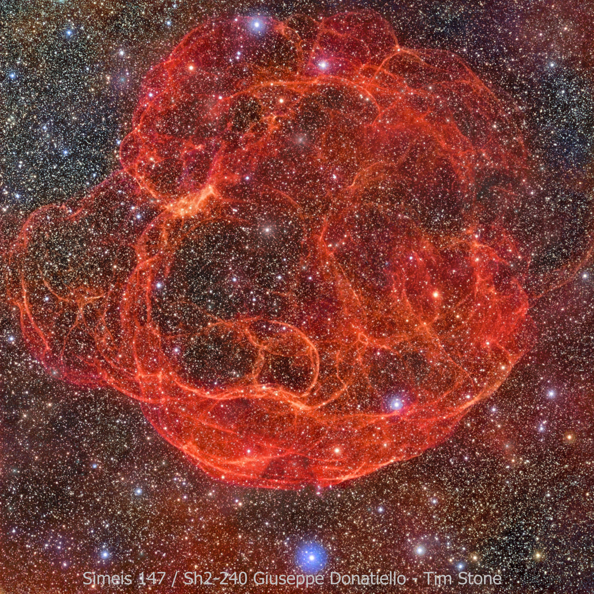
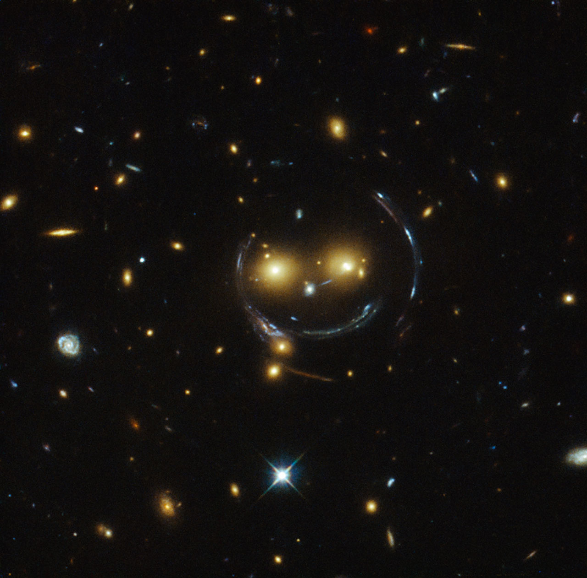

Samuel J. Dunham
Astronomy PhD Candidate
Menu
CCSN Research
Strong Lensing Research
CV


 About Me
Hi! My name is Sam, and welcome to my website! I am a third-year
graduate student at Vanderbilt University, studying
astronomy. This is the first webpage I've made since high-school,
so if you have any comments/criticims or whatever, please let me know!
About Me
Hi! My name is Sam, and welcome to my website! I am a third-year
graduate student at Vanderbilt University, studying
astronomy. This is the first webpage I've made since high-school,
so if you have any comments/criticims or whatever, please let me know!
My research-related interests span a wide range of topics,
but include computer simulations, hydrodynamics, and general
relativity. Fortuately for me I found the perfect project to work
on!
My non-research-related interests span an even wider range of
topics, but include cooking, being a dog dad (to Daisy and
Lily), enjoying the outdoors, and traveling. I am also a big
advocate for animal welfare, especially stopping animal cruelty.
If you're looking for my CV, click here.
Core-Collapse Supernova Research

The stability of stars is due to the force of gravity being
balanced by the pressure from the gas and radiation produced by
nuclear fusion in the stellar core. When a star runs out of
material to fuse this balance is lost, gravity takes over, and the
star begins to collapse. Stars more massive than
about eight suns end their lives with a tremendous
explosion known as a supernova. The energy output of this
explosion is approximately 100 times the energy that our
sun will produce in its entire ten-million year lifetime! What's
more, it is all released in a matter of seconds! These explosions
distribute many of the heavy elements in the solar system,
including carbon, the element on which life as we know it is
based. So it behooves us to understand this process well, because
it is to that which we literally owe our entire existence!
Although there are many promising leads, it is not currently known
exactly how the explosion proceeds.
What is known is that the core collapses until the
pressure is so high that the
repulsive electrical forces between the constituent atoms are
overcome and the core transforms from a ball of iron
into effectively one giant atomic nucleus--this is what will
eventually become a neutron star (assuming it doesn't collapse to
a black hole). This transition produces a shock wave that
propagates outward. It is intuitive that this shock wave simply
propagates through the entire star, blowing the material away with
it. However, as often happens, nature is not so simple. It was
discovered via computer simulations that the shock wave stalls
about 200 km from the center of the star. The shock is
somehow re-energized, and continues on its explosive
path. The goal of the research group I'm in is to determine this
re-energizing mechanism.
Currently I collaborate with Profs. Eirik Endeve and
Anthony Mezzacappa at Oak Ridge National Laboratory on the toolkit
for high-order neutrino-radiation
hydrodynamics, thornado, a code
that aims to numerically simulate core-collapse supernovae in
three-dimensions. My work focuses on developing
a module that solves the hydrodynamics equations to make them
consistent with a 3+1 decomposition of general relativity under
the conformally-flat approximation. To accomplish this we are
using a discontinuous Galerkin method for spatial discretization
and strong-stability-preserving Runge-Kutta methods for temporal
discretization.
Back to top
Strong Lensing Research

One consequence of Einstein's theory of general relativity is
that as light travels through a gravitational field, it is
deflected. This phenomenon is known as gravitational
lensing, because the effects are similar to those of light
traveling through a lens. For these effects to be measurable,
enormous masses are required, e.g. a star, a galaxy, or something
even bigger! One source of measurable gravitational lensing is the
light from entire galaxies being deflected by the mass of a galaxy
cluster, the largest gravitationally-bound objects in the
Universe. In analogy with a physical lens, gravitational lenses
can also have magnifiaction effects, increasing the apparent size
of a galaxy, allowing astronomers to see features that would
otherwise be too small to see.
A special case of gravitational lensing is so-called strong
lensing, where the light is deflected to such a degree that
multiple light rays leaving the same point, but traveling in
different directions, can all be bent directly toward us, causing
us to see multiple images of the source (like the mouth and sides
of the smiley face in the accompanying picture).
As an undergraduate I did research with Professor Keren Sharon
in strong gravitational lensing, as part of the Sloan Giant Arcs
Survey (SGAS). My work involved modeling these strong lenses
(i.e. clusters of galaxies, two of which make up the eyes of the smiley
face in the picture) to determine their masses based on the color,
shape, and other properties of the multiple images.
See my undergraduate honor's thesis on one particular lens, SDSS
J1438+1454,
here,
or the paper that came out of that research here.
Back to top
Last updated: June 8, 2019
Figures taken from APOD